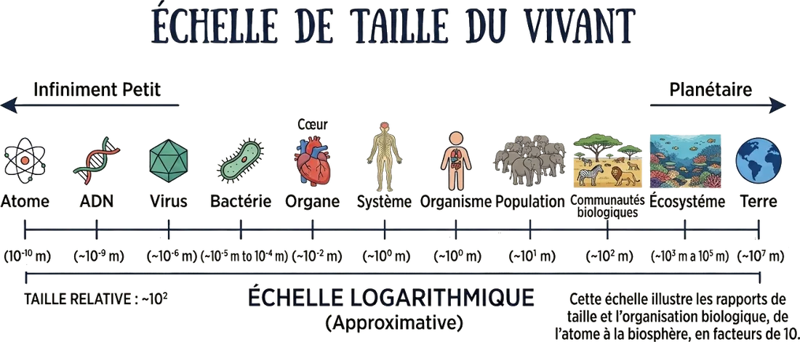
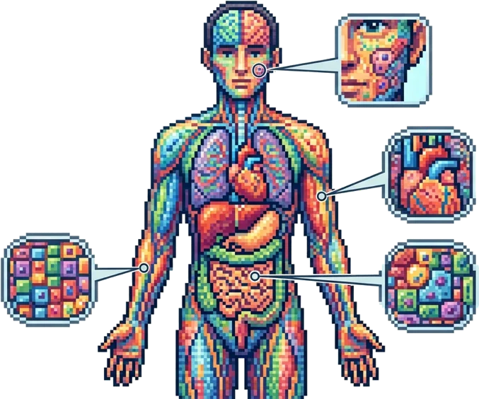
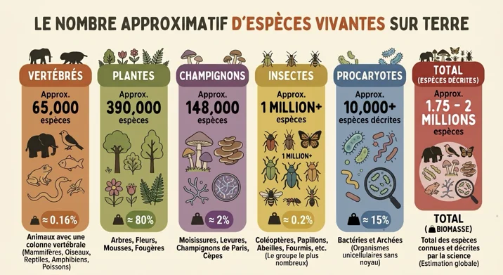
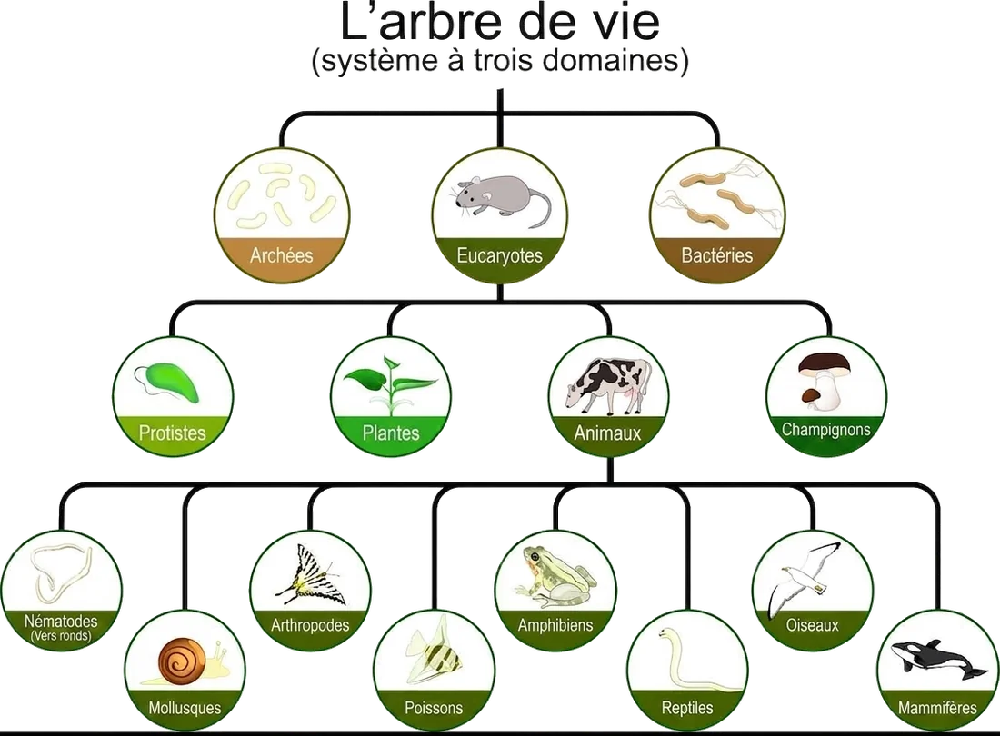
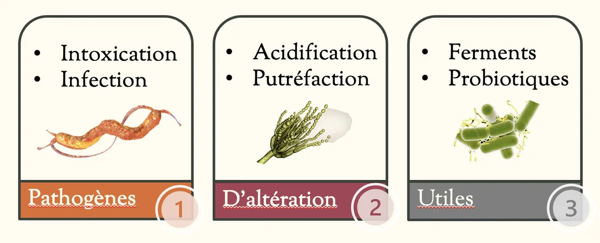

Comment utiliser ce document • Ces notes développent chaque sujet abordé dans le PowerPoint du cours 1, avec des explications complètes pour une personne qui débute en biologie. • Les questions posées dans le PPT (« C'est quoi une cellule ? », « C'est gros comment ? », etc.) sont reprises et répondues en détail. • Les mots en gras sont des termes clés à connaître — ils reviendront dans les cours suivants et dans les évaluations. • Chaque section se termine par un court résumé « à retenir ». |
|---|
Plan de la séance 1
Qu'est-ce que la biologie ?
Le vivant : les 8 caractéristiques communes à tout organisme vivant
La cellule : unité de base du vivant
La diversité du vivant et la taxonomie
Les origines du vivant : des générations spontanées à la théorie cellulaire
Les microorganismes : diversité et importance
Les microorganismes en contexte alimentaire : pathogènes, d'altération et utiles
1. Qu'est-ce que la biologie ?
Le mot « biologie » est composé de deux racines grecques :
bio : le vivant
logie : l'étude de, le discours sur
La biologie est donc, littéralement, « l'étude du vivant ».
C'est une science extrêmement large : elle englobe l'étude des molécules qui composent les organismes (biochimie), des cellules (biologie cellulaire), des organismes entiers (physiologie, anatomie), des populations et des écosystèmes (écologie), ainsi que de l'histoire et de l'évolution des espèces (biologie évolutive).
La microbiologie, qui est le cœur de ce cours, est la branche de la biologie qui étudie spécifiquement les organismes trop petits pour être vus à l'œil nu : les microorganismes (bactéries, levures, moisissures, virus, protozoaires, etc.). Dans le contexte de ce cours, on s'intéresse à la microbiologie alimentaire, c'est-à-dire au rôle de ces microorganismes dans la production, la conservation, l'altération et la sécurité des aliments.
À retenir • Biologie = bio (vivant) + logie (étude de) → l'étude du vivant. • La microbiologie alimentaire est une branche appliquée de la biologie qui s'intéresse aux organismes microscopiques présents dans les aliments. |
|---|
2. Le vivant : qu'est-ce qui distingue un organisme vivant d'un objet inerte ?
Avant de parler de cellules ou de microorganismes, il faut être capable de répondre à une question fondamentale : qu'est-ce qui définit un être vivant ? Une roche, une flamme ou un cristal peuvent sembler avoir certaines propriétés du vivant (croissance d'un cristal, par exemple), mais aucun ne remplit l'ensemble des huit critères suivants. Un organisme est considéré vivant seulement s'il présente toutes ces caractéristiques à la fois.
2.1 Organisation cellulaire
Tout être vivant est constitué d'au moins une cellule. La cellule est l'unité structurale et fonctionnelle de base du vivant : c'est le plus petit niveau d'organisation qui possède encore toutes les propriétés de la vie. Un organisme peut être :
unicellulaire : formé d'une seule cellule (ex. : la plupart des bactéries, certaines levures)
pluricellulaire : formé de plusieurs cellules, parfois des milliards, organisées en tissus et en organes (ex. : les animaux, les plantes, les champignons filamenteux)
2.2 Métabolisme
Un organisme vivant transforme de la matière et de l'énergie pour fonctionner. L'ensemble des réactions chimiques qui se produisent à l'intérieur d'un organisme pour le maintenir en vie porte le nom de métabolisme. On distingue généralement deux volets :
Catabolisme : dégradation de molécules complexes (ex. : glucides, lipides) pour libérer de l'énergie
Anabolisme : construction de molécules complexes à partir de molécules simples, en consommant de l'énergie (ex. : synthèse de protéines)
C'est justement ce métabolisme microbien qui explique pourquoi les microorganismes peuvent transformer les aliments : ils utilisent les glucides, lipides et protéines présents dans un aliment comme source d'énergie, et rejettent des sous-produits (acides, gaz, alcools) qui modifient le goût, la texture ou l'odeur de l'aliment — parfois de façon désirable (fromage, yogourt, pain), parfois non (putréfaction).
2.3 Homéostasie
L'homéostasie est la capacité d'un organisme à maintenir un équilibre interne stable malgré les variations de son environnement externe (température, pH, disponibilité en eau, etc.). Par exemple, le corps humain maintient sa température autour de 37 °C peu importe la température extérieure. Chez les microorganismes, l'homéostasie se traduit notamment par leur capacité à réguler la composition interne de leur cytoplasme même lorsque le milieu qui les entoure change (ex. : un milieu très salé ou très acide).
2.4 Croissance et développement
Un être vivant augmente en taille et/ou subit des transformations organisées au cours de sa vie (développement). Chez un organisme unicellulaire comme une bactérie, la « croissance » se manifeste surtout par la multiplication du nombre de cellules (division cellulaire), plutôt que par l'augmentation de la taille d'une seule cellule. C'est un concept central en microbiologie alimentaire : on parle de « courbe de croissance bactérienne » pour décrire l'évolution du nombre de microorganismes dans un aliment au fil du temps.
2.5 Reproduction
Tout organisme vivant est capable de produire de nouveaux individus, de deux façons possibles :
Reproduction asexuée : un seul parent produit une descendance génétiquement identique (clone). C'est le mode de reproduction dominant chez les bactéries (fission binaire) et chez plusieurs levures (bourgeonnement).
Reproduction sexuée : deux parents combinent leur matériel génétique pour produire une descendance génétiquement différente des deux parents. Ce mode existe aussi chez certains champignons.
2.6 Hérédité
Un organisme vivant possède une information génétique, l'ADN (acide désoxyribonucléique), qui contient les « instructions » nécessaires à sa structure et à son fonctionnement, et qui est transmise à sa descendance. C'est cette hérédité qui explique, par exemple, pourquoi une bactérie d'une espèce donnée produira toujours des cellules filles de la même espèce, avec les mêmes caractéristiques (résistance à un antibiotique, capacité à produire une toxine, etc.).
2.7 Réponse aux stimuli
Un organisme vivant détecte les changements dans son environnement et y réagit. Une bactérie peut par exemple se déplacer vers une source de nutriments (chimiotactisme) ou modifier son métabolisme en réponse à un manque d'oxygène. Cette capacité de réponse distingue le vivant d'un objet purement passif.
2.8 Adaptation et évolution
À l'échelle d'une population (et non d'un individu), les organismes vivants peuvent évoluer au fil des générations en réponse aux pressions de leur environnement. Ce phénomène, l'évolution, repose sur la variation génétique et la sélection naturelle. En microbiologie, un exemple concret et très actuel est le développement de la résistance aux antibiotiques : une population de bactéries exposée de façon répétée à un antibiotique peut évoluer et devenir résistante à ce traitement au fil des générations.
À retenir — les 8 caractéristiques du vivant • 1. Organisation cellulaire — 2. Métabolisme — 3. Homéostasie — 4. Croissance et développement • 5. Reproduction — 6. Hérédité — 7. Réponse aux stimuli — 8. Adaptation et évolution • Un objet doit présenter TOUTES ces caractéristiques pour être considéré vivant. |
|---|
3. La cellule : l'unité de base du vivant
Puisque l'organisation cellulaire est la première caractéristique du vivant, il est essentiel de bien comprendre ce qu'est une cellule avant d'aller plus loin. Le PowerPoint posait trois questions simples mais fondamentales : qu'est-ce qu'une cellule, c'est gros comment, et où en trouve-t-on ? Voici les réponses détaillées.
3.1 C'est quoi, une cellule ?
Une cellule est la plus petite unité structurale et fonctionnelle capable d'assurer, à elle seule, toutes les fonctions du vivant décrites plus haut (métabolisme, croissance, reproduction, etc.). On peut la comparer à une petite « usine » délimitée par une membrane, à l'intérieur de laquelle se déroulent toutes les réactions chimiques nécessaires à la vie.
Toute cellule, qu'elle soit bactérienne, humaine ou végétale, possède au minimum :
une membrane plasmique : une enveloppe qui sépare l'intérieur (le cytoplasme) de l'environnement extérieur et qui contrôle ce qui entre et sort de la cellule
un cytoplasme : le milieu interne, généralement aqueux, où se déroulent les réactions chimiques
du matériel génétique (ADN) : l'information héréditaire de la cellule
des ribosomes : les structures responsables de la fabrication des protéines
On distingue deux grands types cellulaires, qui seront étudiés en détail au cours 3 : les cellules procaryotes (sans noyau délimité, ex. : bactéries) et les cellules eucaryotes (avec un noyau délimité par une membrane, ex. : cellules animales, végétales, fongiques).
3.2 C'est gros comment ?
La taille des structures biologiques varie sur une échelle immense, appelée l'échelle de taille du vivant. Cette échelle est logarithmique, c'est-à-dire que chaque graduation représente une multiplication (ou une division) par 10 par rapport à la précédente — et non une simple addition. Voici les ordres de grandeur, de l'infiniment petit au planétaire :
| Niveau | Taille approximative | Exemple |
|---|---|---|
| Atome | ~10⁻¹⁰ m | Atome de carbone |
| ADN (largeur) | ~10⁻⁹ m | Double hélice d'ADN |
| Virus | ~10⁻⁶ m (échelle) | Norovirus |
| Bactérie | ~10⁻⁵ à 10⁻⁴ m (1 à 10 µm) | E. coli |
| Cellule / organe | ~10⁻² m | Cœur humain |
| Organisme | ~10⁰ m | Être humain adulte |
| Population | ~10¹ m | Troupeau d'éléphants |
| Écosystème | ~10³ à 10⁵ m | Récif corallien |
| Terre | ~10⁷ m | Planète entière |
Pour se donner une image concrète : une bactérie typique mesure environ 1 à 5 micromètres (µm), soit 0,001 à 0,005 millimètre. Il faudrait aligner entre 200 et 1000 bactéries côte à côte pour couvrir seulement 1 millimètre ! C'est pourquoi les microorganismes sont invisibles à l'œil nu et nécessitent un microscope pour être observés — ce sera l'objet du laboratoire de microscopie plus tard dans le cours.

3.3 Où trouve-t-on des cellules ?
Partout, dans tout organisme vivant. Chez l'humain, par exemple, chaque organe et chaque tissu est composé de cellules spécialisées : cellules de la peau (kératinocytes), cellules du cœur (cardiomyocytes), cellules du système digestif, globules rouges et blancs dans le sang, etc. Chaque type de cellule a une forme et une fonction adaptées à son rôle, mais toutes partagent la structure de base décrite en 3.1.
En contexte alimentaire, on retrouve également des cellules partout : dans les tissus végétaux et animaux qui composent les aliments eux-mêmes, mais aussi — et c'est ce qui nous intéresse particulièrement dans ce cours — à la surface et à l'intérieur des aliments sous forme de microorganismes (bactéries, levures, moisissures), qui peuvent provenir de l'environnement, des matières premières, ou de la manipulation humaine.

3.4 Combien de cellules avons-nous ?
Le corps humain adulte est estimé à environ 36 000 000 000 (36 milliards) de cellules... mais ce chiffre concerne uniquement les cellules humaines. Si on ajoute l'ensemble des microorganismes qui vivent sur et dans notre corps (le microbiote), notamment dans le système digestif, ce nombre grimpe à environ 40 000 000 000 000 (40 billions/trillions) de cellules microbiennes. Autrement dit, le corps humain contient globalement plus de cellules microbiennes que de cellules humaines ! Ce fait illustre à quel point les microorganismes sont omniprésents, y compris à l'intérieur même de notre propre corps.
À retenir — la cellule • La cellule = plus petite unité vivante ; composée au minimum d'une membrane, d'un cytoplasme, d'ADN et de ribosomes. • Échelle logarithmique : atome < ADN < virus < bactérie < cellule/organe < organisme < population < écosystème < Terre. • Une bactérie mesure environ 1 à 5 µm — invisible à l'œil nu, visible au microscope. • Le corps humain compte ~36 milliards de cellules humaines, mais ~40 billions de cellules microbiennes (microbiote). |
|---|
4. La diversité du vivant et la taxonomie
4.1 Une incroyable diversité
Le vivant se décline en une diversité stupéfiante de formes. On estime qu'il existe entre 1,75 et 2 millions d'espèces déjà décrites par la science (et probablement plusieurs millions d'autres non encore découvertes, en particulier chez les insectes et les microorganismes). Voici un aperçu de la répartition approximative de ces espèces décrites :
Vertébrés (animaux à squelette interne : mammifères, oiseaux, poissons, reptiles, amphibiens) : environ 65 000 espèces (≈ 0,16 % de la biomasse totale)
Plantes : environ 390 000 espèces (mais représentant environ 80 % de la biomasse totale du vivant sur Terre)
Champignons : environ 148 000 espèces (≈ 2 % de la biomasse)
Insectes : plus de 1 million d'espèces (≈ 0,2 % de la biomasse)
Procaryotes (bactéries et archées) : plus de 10 000 espèces décrites, mais ce nombre est très largement sous-estimé (≈ 15 % de la biomasse totale malgré leur taille minuscule)
Ce dernier point est frappant : bien que chaque bactérie soit microscopique, la biomasse totale des procaryotes sur Terre est immense, en raison de leur nombre absolument colossal. Ceci illustre à quel point les microorganismes, malgré leur invisibilité, occupent une place centrale dans les écosystèmes de la planète — et donc dans nos aliments.

4.2 La taxonomie : classer le vivant
Face à une telle diversité, les biologistes ont besoin d'un système pour organiser, nommer et classer les organismes vivants. Ce système s'appelle la taxonomie (ou systématique). Il permet de regrouper les organismes selon leurs ressemblances (souvent liées à leur parenté évolutive), un peu comme un arbre généalogique du vivant.
Le système actuellement utilisé, dit « à trois domaines », divise l'ensemble du vivant en trois grandes branches fondamentales, appelées domaines :
Archées : des procaryotes (organismes sans noyau) qui vivent souvent dans des milieux extrêmes (sources chaudes, milieux très salés, etc.), bien qu'on en trouve aussi dans des environnements plus communs
Bactéries : des procaryotes très diversifiés, présents pratiquement partout sur Terre — dans le sol, l'eau, l'air, les aliments, et sur/dans les organismes vivants. C'est le domaine le plus pertinent pour ce cours.
Eucaryotes : tous les organismes dont les cellules possèdent un noyau délimité par une membrane. Ce domaine se subdivise à son tour en quatre grands règnes :
Protistes (organismes eucaryotes souvent unicellulaires, comme certaines algues et protozoaires)
Plantes
Animaux
Champignons (mycètes)
Le règne animal se subdivise à son tour en plusieurs groupes (nématodes, arthropodes, mollusques, poissons, amphibiens, reptiles, oiseaux, mammifères), et ainsi de suite : la taxonomie fonctionne comme une hiérarchie de catégories de plus en plus précises, jusqu'à l'espèce individuelle.

À retenir — taxonomie • La taxonomie classe le vivant en trois domaines : Archées, Bactéries, Eucaryotes. • Les eucaryotes se divisent en 4 règnes : Protistes, Plantes, Animaux, Champignons. • Malgré leur petite taille, les bactéries et autres procaryotes représentent une part énorme de la biomasse et de la diversité du vivant. |
|---|
5. D'où vient le vivant ? Des générations spontanées à la théorie cellulaire
5.1 La théorie des générations spontanées
Pendant des siècles, avant l'essor de la science moderne, on croyait que la vie pouvait apparaître spontanément à partir de matière non vivante, sans avoir besoin d'un organisme parent. C'est ce qu'on appelle la théorie de la génération spontanée. Par exemple, on croyait que des asticots apparaissaient spontanément dans la viande en décomposition, ou que des souris pouvaient naître de vieux chiffons et de grains de blé laissés dans un coin sombre.
Cette idée a été progressivement remise en question par plusieurs expériences scientifiques célèbres :
Francesco Redi (17e siècle) : a démontré que les asticots n'apparaissaient dans la viande que lorsque des mouches pouvaient y accéder pour pondre leurs œufs ; en recouvrant la viande d'une gaze, aucun asticot n'apparaissait.
Louis Pasteur (19e siècle) : a porté le coup final à la théorie de la génération spontanée grâce à ses expériences avec des ballons à « col de cygne ». Il a montré qu'un bouillon nutritif stérilisé restait exempt de microorganismes tant que l'air (et donc les microorganismes qu'il transporte) ne pouvait pas y accéder directement, même si l'air lui-même pouvait circuler. Cela a prouvé que les microorganismes qui apparaissaient dans un bouillon non protégé provenaient de l'environnement (contamination), et non d'une génération spontanée à partir du bouillon lui-même.
Ces expériences ont mené à l'établissement du principe de la biogenèse : tout être vivant provient d'un autre être vivant (« omne vivum ex vivo »). Ce principe est fondamental en microbiologie alimentaire : il explique pourquoi la stérilisation, la pasteurisation et les bonnes pratiques d'hygiène permettent de prévenir la contamination microbienne des aliments — en empêchant les microorganismes de l'environnement d'y accéder, plutôt qu'en empêchant une improbable « apparition spontanée ».
5.2 La théorie cellulaire
En parallèle du rejet des générations spontanées, l'invention et l'amélioration du microscope aux 17e et 19e siècles ont permis aux scientifiques d'observer directement les cellules pour la première fois. Ces observations ont mené à la formulation de la théorie cellulaire, l'un des principes fondateurs de toute la biologie moderne. Elle comporte généralement trois énoncés :
Tous les organismes vivants sont composés d'une ou de plusieurs cellules.
La cellule est l'unité structurale et fonctionnelle de base du vivant (c'est le plus petit niveau d'organisation qui possède toutes les caractéristiques de la vie).
Toute cellule provient d'une cellule préexistante, par division cellulaire (« omnis cellula e cellula »).
Ce troisième énoncé complète parfaitement le principe de biogenèse évoqué plus haut : non seulement tout être vivant provient d'un autre être vivant, mais plus précisément, toute cellule provient de la division d'une cellule mère. C'est exactement ce mécanisme — la division cellulaire répétée — qui permet à une seule bactérie contaminant un aliment de se multiplier rapidement en une population capable de causer une intoxication alimentaire si les conditions (température, humidité, temps) sont favorables.
À retenir — origines du vivant • Les expériences de Redi et surtout de Pasteur ont réfuté la théorie des générations spontanées. • Principe de biogenèse : tout être vivant provient d'un autre être vivant. • Théorie cellulaire : tous les organismes sont faits de cellules ; la cellule est l'unité de base du vivant ; toute cellule provient d'une cellule préexistante. • Application alimentaire : une contamination microbienne provient toujours d'une source externe, jamais d'une « apparition spontanée » dans l'aliment. |
|---|
6. Les microorganismes : une diversité au cœur de notre environnement
Un microorganisme (ou micro-organisme) est un organisme vivant trop petit pour être observé à l'œil nu, nécessitant un microscope pour être vu. Cette catégorie n'est pas un groupe taxonomique unique — elle regroupe des organismes très différents les uns des autres du point de vue de leur classification, mais qui partagent cette caractéristique commune : la petite taille. On y retrouve notamment :
Les bactéries (procaryotes)
Les archées (procaryotes)
Les levures et moisissures (champignons microscopiques, eucaryotes)
Les protozoaires (eucaryotes unicellulaires)
Certaines algues microscopiques (eucaryotes)
Les virus (qui ne sont pas des cellules à proprement parler — leur statut « vivant » est d'ailleurs débattu, un sujet qui sera approfondi au cours 5-6)
6.1 Une abondance difficile à imaginer
On peut aligner plusieurs centaines de microorganismes côte à côte dans un seul millimètre : une bactérie typique mesurant environ 1 à 2 µm de large, il faudrait en aligner environ 500 à 1000 pour couvrir 1 mm (1000 µm). À cette échelle, une simple goutte d'eau, une pincée de terre ou la surface d'un aliment peuvent contenir des millions, voire des milliards de microorganismes.
6.2 Où peut-on trouver des microorganismes ?
Pratiquement partout. Les microorganismes sont ubiquitaires, c'est-à-dire présents dans presque tous les milieux de la planète :
Le sol et l'eau (douce, salée, souterraine)
L'air (en suspension, sur les particules de poussière)
La surface et l'intérieur des végétaux et des animaux (y compris chez l'humain — le microbiote)
Les surfaces de travail, les équipements, les ustensiles, les mains
Les aliments eux-mêmes, dès la récolte ou l'abattage, tout au long de la chaîne de transformation, jusqu'à l'assiette
Des environnements extrêmes : sources chaudes, glaces polaires, milieux très salés ou très acides (organismes dits « extrêmophiles », surtout chez les archées)
Cette omniprésence explique pourquoi il est impossible d'obtenir un environnement alimentaire totalement exempt de microorganismes en conditions normales de production — l'objectif réaliste de l'industrie alimentaire n'est donc pas d'éliminer tous les microorganismes, mais de contrôler leur type et leur quantité afin de garantir la salubrité et la qualité des aliments. C'est précisément l'objet de ce cours.
À retenir — les microorganismes • Un microorganisme = organisme invisible à l'œil nu, regroupant bactéries, archées, levures/moisissures, protozoaires, certaines algues, et les virus. • Ils sont ubiquitaires : présents dans le sol, l'eau, l'air, sur les surfaces, les organismes vivants et les aliments. • Objectif en industrie alimentaire : contrôler, pas éliminer totalement, les microorganismes. |
|---|
7. Les microorganismes en contexte alimentaire
Puisque les microorganismes sont omniprésents, y compris dans et sur les aliments, il est essentiel de comprendre les différents rôles qu'ils peuvent y jouer. On distingue généralement trois grandes catégories de microorganismes alimentaires, selon leur effet sur l'aliment et sur la santé du consommateur : les pathogènes, les microorganismes d'altération, et les microorganismes utiles.

7.1 Les microorganismes pathogènes

Les microorganismes pathogènes sont ceux capables de causer une maladie chez l'humain lorsqu'ils sont ingérés en quantité suffisante (ou lorsqu'ils ont produit suffisamment de toxines dans l'aliment). Une caractéristique importante — et dangereuse — de cette catégorie est que la présence de microorganismes pathogènes n'entraîne souvent peu ou pas de modifications visibles de l'apparence, de l'odeur ou du goût de l'aliment. Un aliment contaminé par des pathogènes peut donc sembler parfaitement normal.
On distingue trois mécanismes par lesquels un microorganisme pathogène peut rendre une personne malade :
Intoxication : empoisonnement causé par l'ingestion de toxines déjà présentes dans l'aliment, produites par le microorganisme avant même la consommation (ex. : certaines toxines de Staphylococcus aureus, ou de Bacillus cereus). Le microorganisme lui-même n'a pas besoin d'être encore vivant au moment de l'ingestion — c'est la toxine qui cause le problème.
Infection : pénétration et développement du microorganisme lui-même dans les tissus de la personne (l'hôte), qui doit survivre au passage dans l'estomac et se multiplier dans l'organisme pour causer la maladie (ex. : Salmonella, Listeria).
Toxi-infection : combinaison des deux mécanismes : le microorganisme pénètre et se développe à l'intérieur de l'hôte, puis y libère des toxines une fois installé (ex. : certaines souches de Clostridium perfringens).
Un aliment devient dangereux lorsqu'il y a contamination excessive, c'est-à-dire lorsque la quantité de microorganismes pathogènes (ou de leurs toxines) dépasse un seuil critique. Ce seuil dépend de plusieurs facteurs : les conditions du milieu qui favorisent (ou non) la croissance microbienne (température, humidité, pH, temps), et les conditions propres à l'organisme de la personne qui consomme l'aliment (âge, système immunitaire, état de santé général — les enfants, les personnes âgées, les femmes enceintes et les personnes immunosupprimées étant particulièrement à risque).
7.2 Les microorganismes d'altération

Les microorganismes d'altération sont ceux qui, sans nécessairement être dangereux pour la santé, dégradent la qualité sensorielle d'un aliment (apparence, texture, odeur, goût) au point de le rendre impropre à la consommation humaine. On parle notamment de deux phénomènes typiques :
Acidification : production d'acides organiques par le métabolisme microbien, qui fait chuter le pH de l'aliment et en modifie le goût (parfois désirable, comme dans le yogourt, mais indésirable dans d'autres contextes).
Putréfaction : dégradation des protéines par des microorganismes, produisant des odeurs et des composés désagréables (souvent associée à la décomposition de la viande ou du poisson).
Contrairement aux pathogènes, les microorganismes d'altération se développent généralement dans des aliments non stériles où leur quantité varie, et ils sont souvent inoffensifs ou peu nombreux au départ — mais leur multiplication progressive entraîne une détérioration sensorielle qui rend l'aliment impropre à la consommation humaine, même s'il n'est pas nécessairement dangereux.
Deux approches permettent de gérer ce type de microorganismes :
Les traitements qui visent à inhiber leur croissance (ralentir leur multiplication, ex. : réfrigération) ou à les éliminer complètement (ex. : cuisson, pasteurisation)
Des mesures de prévention et de retardement de l'altération, notamment : bien connaître la nature et l'origine du microorganisme en cause, appliquer des précautions rigoureuses lors de la manipulation et de l'entreposage des aliments, et réduire activement la vitesse de croissance et de prolifération microbienne (par le froid, la réduction de l'humidité disponible, etc.)
7.3 Les microorganismes utiles

Tous les microorganismes ne sont pas nuisibles — bien au contraire. Une grande variété de microorganismes est activement utilisée dans la fabrication de produits alimentaires, sous forme de ferments (cultures microbiennes ajoutées intentionnellement à un aliment) ou de probiotiques (microorganismes vivants qui, consommés en quantité adéquate, procurent un bénéfice pour la santé).
Ces microorganismes utiles permettent de fabriquer des produits qui sont :
Plus agréables au goût (développement d'arômes complexes, ex. : fromages affinés)
De meilleure valeur nutritive (ex. : synthèse de certaines vitamines pendant la fermentation)
Plus digestes (ex. : la fermentation lactique du lait facilite sa digestion pour certaines personnes intolérantes au lactose)
Plus faciles à conserver (l'acidification ou la déshydratation produites par la fermentation inhibent la croissance d'autres microorganismes indésirables)
Le pain, le fromage, le yogourt, la choucroute, le vin, la bière et le vinaigre sont tous des exemples classiques d'aliments issus de la fermentation microbienne intentionnelle.
7.4 Le microbiote intestinal : des microorganismes utiles à l'intérieur de nous
Le gros intestin humain regorge de bactéries qui le colonisent naturellement — c'est ce qu'on appelle la flore intestinale, aujourd'hui plus souvent nommée microbiote intestinal. Plusieurs de ces bactéries (dont différentes souches d'Escherichia coli, une espèce généralement inoffensive dans ce contexte) rendent en réalité plusieurs services à notre organisme :
Elles fermentent les glucides non digérés par notre système digestif (comme la cellulose), ainsi que certaines protéines et certains lipides — ce processus de fermentation libère des gaz, ce qui explique les flatulences, un phénomène tout à fait normal et lié à l'activité de notre microbiote.
Elles synthétisent certaines vitamines essentielles, notamment la vitamine K et plusieurs vitamines du groupe B (dont la B12) — chez certains animaux qui pratiquent la coprophagie (consommation de leurs propres excréments), ce mécanisme permet même de récupérer ces vitamines synthétisées par leur propre microbiote.
Elles occupent l'espace et les ressources disponibles dans l'intestin, ce qui aide à protéger l'organisme contre l'implantation de bactéries pathogènes (un phénomène appelé « exclusion compétitive »).
Cet exemple illustre bien la thématique centrale de ce cours : un même type général de microorganisme (une bactérie) peut être bénéfique, neutre ou nuisible selon l'espèce, la souche, le contexte et la quantité en cause. Comprendre cette nuance — plutôt que de considérer tous les microorganismes comme simplement « mauvais » — est l'un des objectifs fondamentaux de la microbiologie alimentaire.
À retenir — microorganismes alimentaires • Pathogènes : causent une maladie par intoxication (toxine ingérée), infection (MO qui se développe dans l'hôte) ou toxi-infection (les deux) ; souvent invisibles à l'œil nu dans l'aliment. • D'altération : dégradent la qualité sensorielle de l'aliment (acidification, putréfaction) sans nécessairement le rendre dangereux. • Utiles : ferments et probiotiques qui améliorent le goût, la valeur nutritive, la digestibilité et la conservation des aliments (pain, fromage, yogourt, etc.). • Le microbiote intestinal humain illustre qu'un même type de bactérie peut être bénéfique dans un contexte donné. |
|---|
Résumé général de la séance 1
Cette première séance a posé les bases conceptuelles nécessaires à tout le reste du cours de microbiologie alimentaire :
La biologie est l'étude du vivant, et la microbiologie en est la branche qui s'intéresse aux organismes microscopiques.
Un organisme est vivant s'il présente les 8 caractéristiques du vivant : organisation cellulaire, métabolisme, homéostasie, croissance et développement, reproduction, hérédité, réponse aux stimuli, adaptation et évolution.
La cellule est l'unité de base du vivant ; les microorganismes, bien qu'invisibles à l'œil nu (échelle du micromètre), sont extrêmement nombreux — y compris à l'intérieur même de notre propre corps.
Le vivant est classé en trois domaines (Archées, Bactéries, Eucaryotes) selon la taxonomie, et présente une diversité colossale d'espèces.
La théorie des générations spontanées a été réfutée par Pasteur, menant au principe de biogenèse et à la théorie cellulaire (toute cellule provient d'une cellule préexistante) — un principe fondamental pour comprendre la contamination des aliments.
Les microorganismes sont ubiquitaires dans l'environnement, y compris dans la chaîne alimentaire.
En contexte alimentaire, on distingue les microorganismes pathogènes (dangereux pour la santé), d'altération (nuisent à la qualité sans nécessairement être dangereux) et utiles (ferments, probiotiques).
Pour la suite du cours • Le cours 2 abordera les grands principes hétérotrophe/autotrophe, l'origine de la vie et les molécules organiques (glucides, lipides, protéines, acides nucléiques) qui composent tous les organismes vivants — y compris les microorganismes. • Le cours 3 approfondira la structure de la cellule (procaryote vs eucaryote) ainsi que l'écologie microbienne et les facteurs qui influencent la croissance des microorganismes dans les aliments. |
|---|